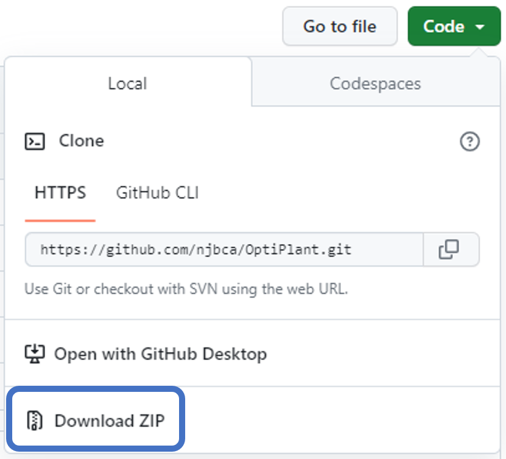
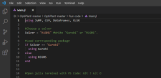

OptiPlant
GitHub Repo: https://github.com/njbca/OptiPlant

Figure 1: OptiPlant GitHub repository - download via "Code → Download ZIP"OptiPlant is a linear optimization model developed by Nicolas Campion (DTU Department of Technology, Management and Economics) that minimizes the investment and operation costs of a power-to-X (PtX) system powered by wind, solar and/or the electricity grid.
Using OptiPlant - Summary/Overview
OptiPlant is a linear optimization model that minimizes the investment and operation costs of a power-to-X (PtX) system powered by wind, solar and/or the electricity grid. It assumes perfect foresight and operates under a "dynamic power supply and system optimization" approach (DPS-Syst-Opt).
The model sizes units and schedules hourly mass/energy flows to meet a yearly fuel demand at minimum cost.

Figure 2: OptiPlant system specifications and optimization objectiveTypical solving time: Usually below 5 minutes using an open-source solver on a personal computer.
Main Purpose and Capabilities
Purpose: Minimize annualized system cost while meeting a specified yearly fuel demand.
Capabilities:
- Customize input parameters (techno-economic data, electricity prices, renewable profiles, by-product prices)
- Choose optimization objective, variables, and constraints structure
- Flexibly modify inputs and extract results in CSV for post-processing in Excel
- Run different scenarios defined in Excel and automatically create a results folder per run
Key Features and Benefits
- Linear deterministic programming with perfect foresight
- Power supply support: Wind, solar, and grid integration
- Modularity: Input parameters, objective, variables/constraints, and outputs can be modified easily
- Fast solve times: Often <5 minutes with open-source solver
- Simple workflow: Prepare data in Excel, run Julia code, review results in CSV/Excel
- Documentation and tool: Available via GitHub ZIP download
About OptiPlant
Complete Project Description
OptiPlant is a tool developed by Nicolas Campion (DTU Department of Technology, Management and Economics) to model PtX fuel production systems with many customizable inputs and to optimize them under DPS-Syst-Opt.
The model minimizes the fuel production cost by managing investments and operation of storage, power-supply, and fuel production units under constraints, with perfect foresight. The main driver is the yearly fuel demand, which must be fulfilled.
What Systems Can Be Modeled
- PtX fuel production systems powered by wind, solar, and/or the electricity grid
- System components: Non-electrical and electrical units, storage, power supply, and fuel production units
Technologies Supported
- Wind (profiles)
- Solar (profiles)
- Electricity grid (hourly buy price)
- Storage and other plant units: Specific technology names are defined via the Excel inputs
Fuel Types That Can Be Produced
Examples include:
- NH₃ (ammonia)
- H₂ (hydrogen)
- MeOH (methanol)
The Selected_units sheet demonstrates how unit selections vary for each fuel production process.
Optimization Methods Available
Linear programming (LP) solved with:
- HiGHS (open-source, recommended)
- Gurobi (commercial solver)
Either solver can be used; both provide the same results (HiGHS recommended as open-source).
Key Features and Benefits
- Linear deterministic programming with perfect foresight
- Multi-source power supply: Wind, solar, and grid integration
- High modularity: Easy modification of inputs, objectives, and outputs
- Fast performance: Often <5 minutes solve time with open-source solver
- User-friendly workflow: Excel → Julia → CSV/Excel results
- Complete documentation: Available via GitHub with comprehensive user guide
Getting Started
- Installation - Set up Julia, VS Code, and required packages
- File Structure - Understand the OptiPlant tool organization
- Examples - Learn through practical examples and troubleshooting
- API Reference - Technical details and specifications
Scientific Background
For detailed model description (plant components/structure, mathematical formulation, data sources, and considerations), refer to:
Nicolas Campion et al. "Techno-economic assessment of green ammonia production with different wind and solar potentials." Renewable Sustainable Energy Reviews 173 (2023).
- DOI: 10.1016/j.rser.2022.113057
- Link: https://www.sciencedirect.com/science/article/pii/S1364032122009388
Citation
When using OptiPlant in your research, please cite the above publication.
@article{campion2023optimization,
title={Techno-economic assessment of green ammonia production with different wind and solar potentials},
author={Campion, Nicolas and Nami, H and Swisher, P R and Vang Hendriksen, P and M{\"u}nster, M},
journal={Renewable and Sustainable Energy Reviews},
volume={173},
pages={113057},
year={2023},
doi={10.1016/j.rser.2022.113057}
}Additional Resources
- GitHub Repository: https://github.com/njbca/OptiPlant
- Julia: https://julialang.org/
- VS Code: https://code.visualstudio.com/
- JuMP: https://jump.dev/JuMP.jl/stable/
- HiGHS: https://highs.dev/
- Gurobi: https://www.gurobi.com/